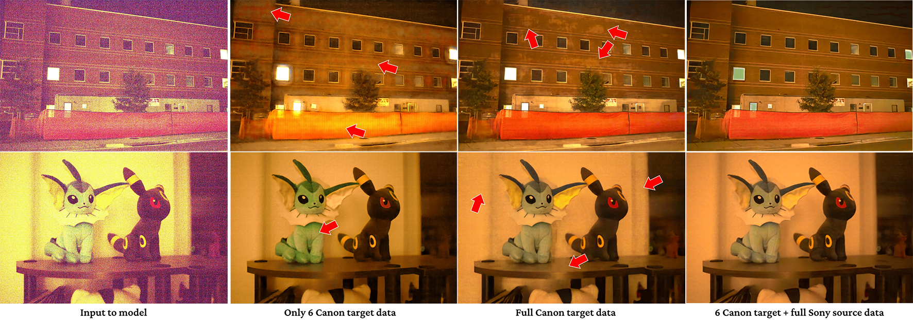

Qualitative comparison with baselines for Sony-source and Nikon-target images.

Enhancing practical low light raw images is a difficult task due to severe noise and color distortions from short exposure time and limited illumination. Despite the success of existing Convolutional Neural Network (CNN) based methods, their performance is not adaptable to different camera domains. In addition, such methods also require large datasets with short-exposure and corresponding long-exposure ground truth raw images for each camera domain, which is tedious to compile. To address this issue, we present a novel few-shot domain adaptation method to utilize the existing source camera labeled data with few labeled samples from the target camera to improve the target domain's enhancement quality in extreme low-light imaging. Our experiments show that only ten or fewer labeled samples from the target camera domain are sufficient to achieve similar or better enhancement performance than training a model with a large labeled target camera dataset. To support research in this direction, we also present a new low-light raw image dataset captured with a Nikon camera, comprising short-exposure and their corresponding long-exposure ground truth images.
@article{prabhakar2021fewshot,
title = {Few-Shot Domain Adaptation for Low Light RAW Image Enhancement},
author = {K. Prabhakar and Vishal Vinod and N. Sahoo and Venkatesh Babu Radhakrishnan},
journal = {British Machine Vision Conference},
year = {2021},
}